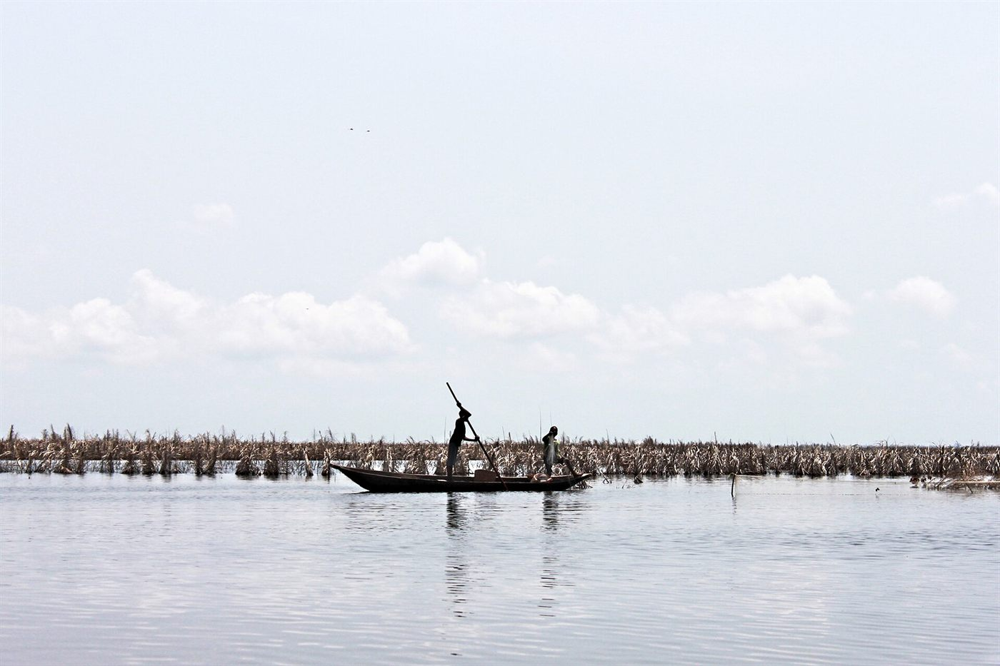
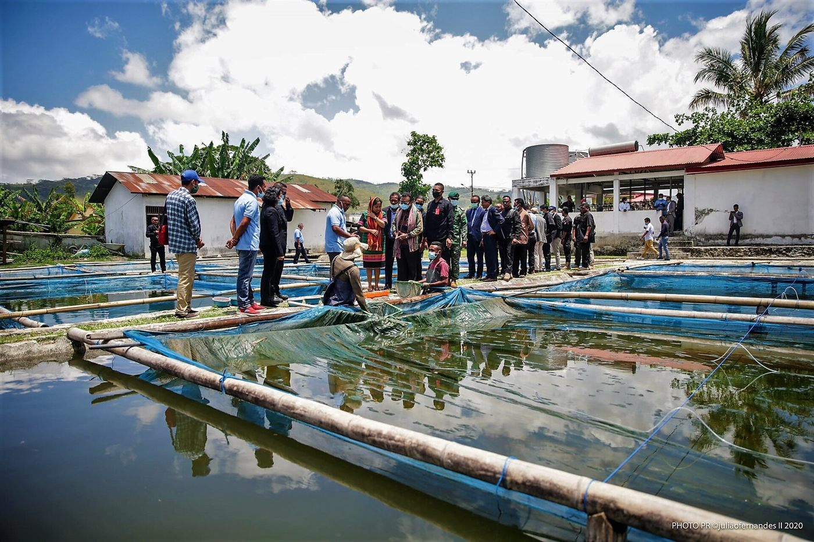
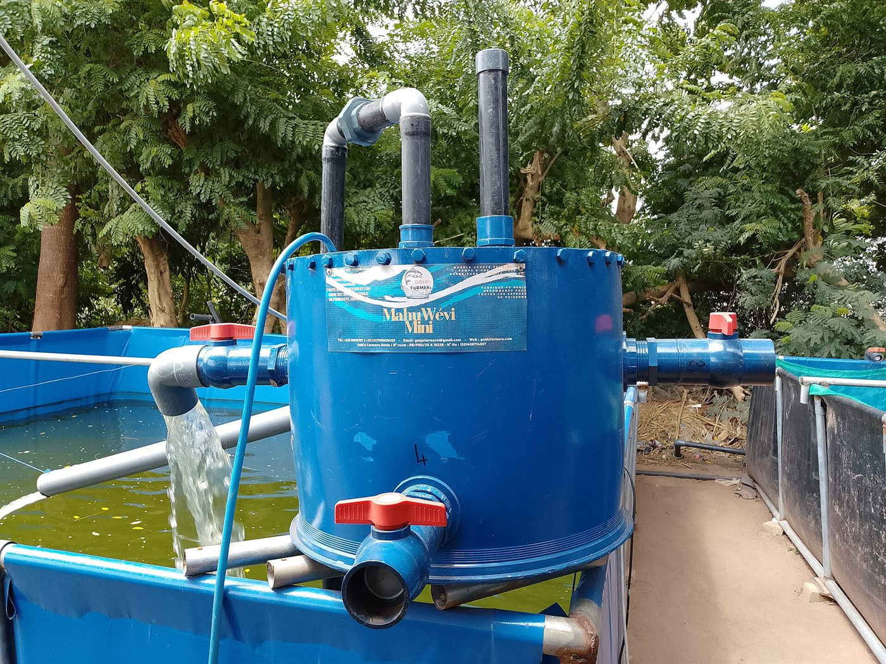
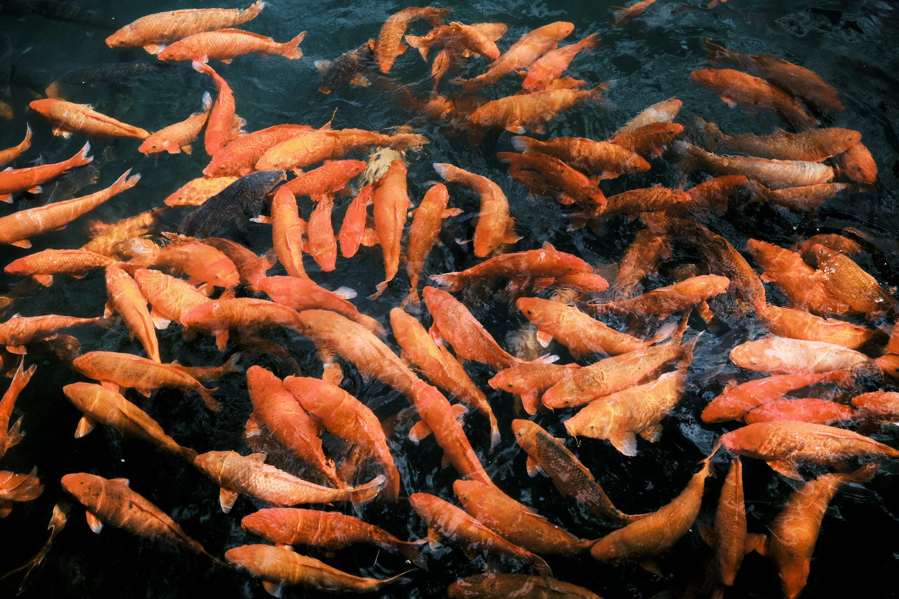
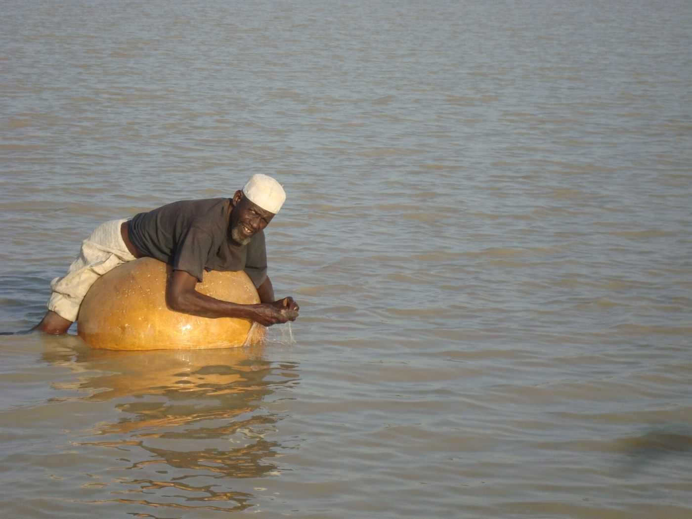
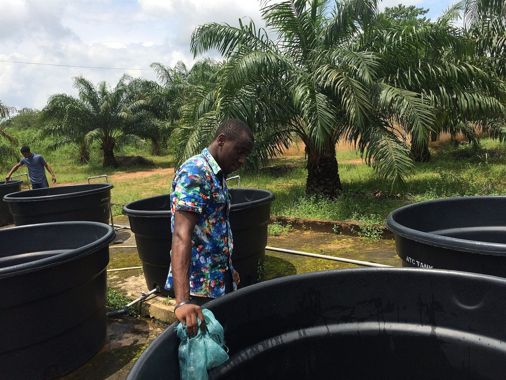
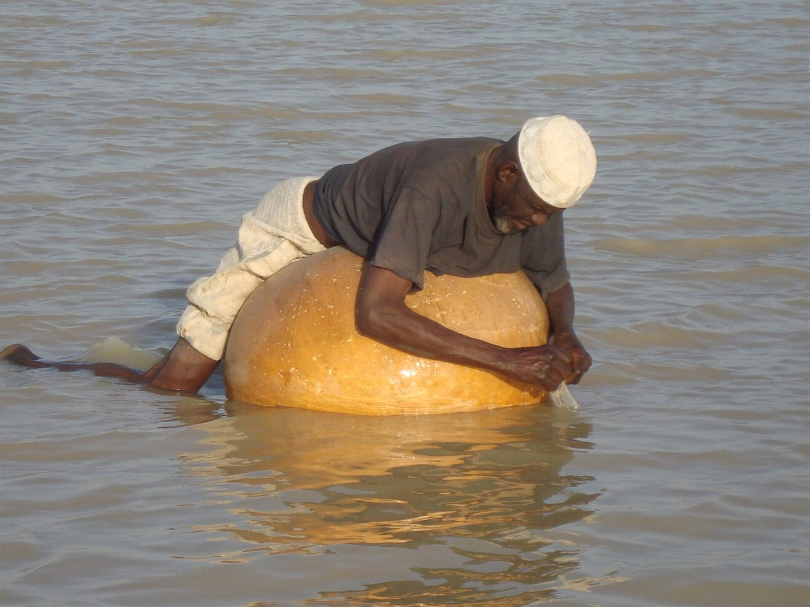
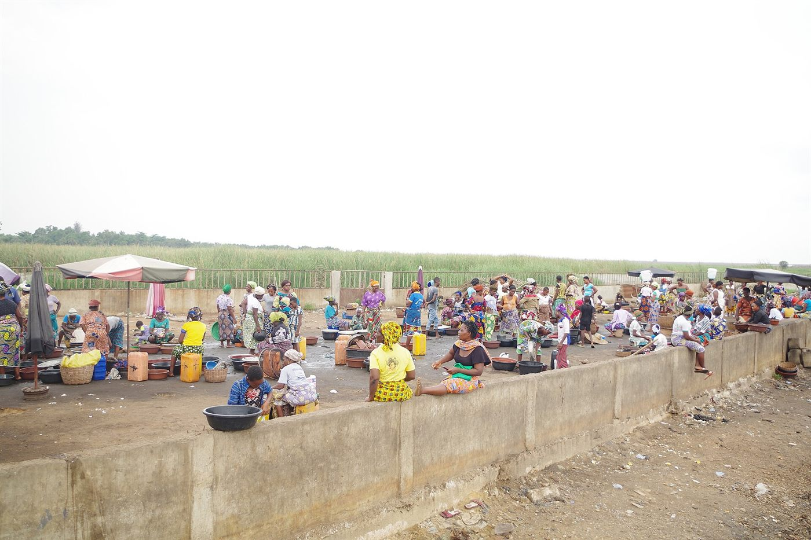
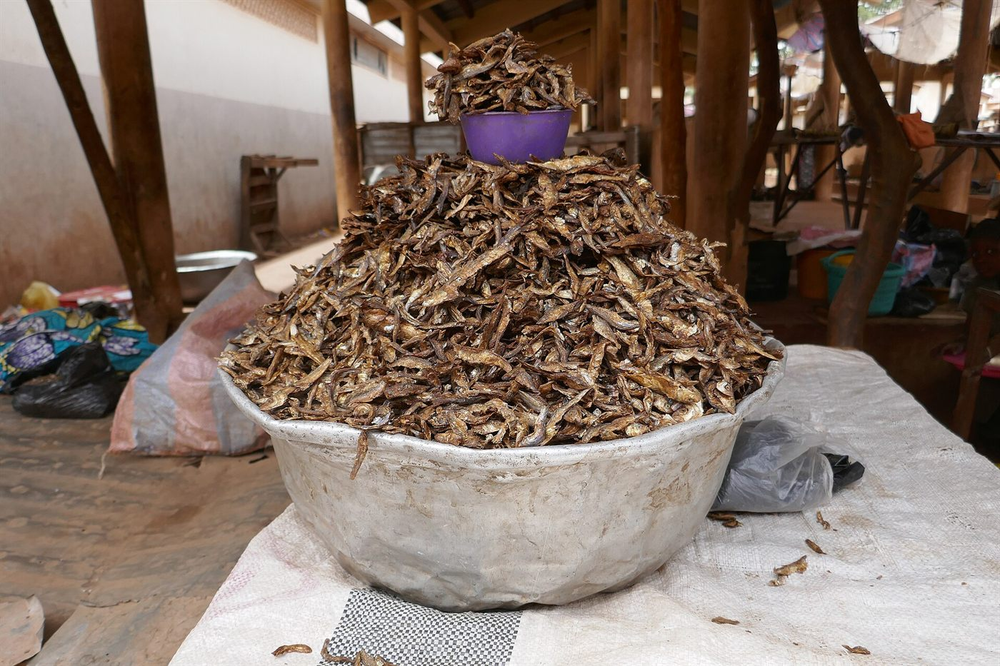
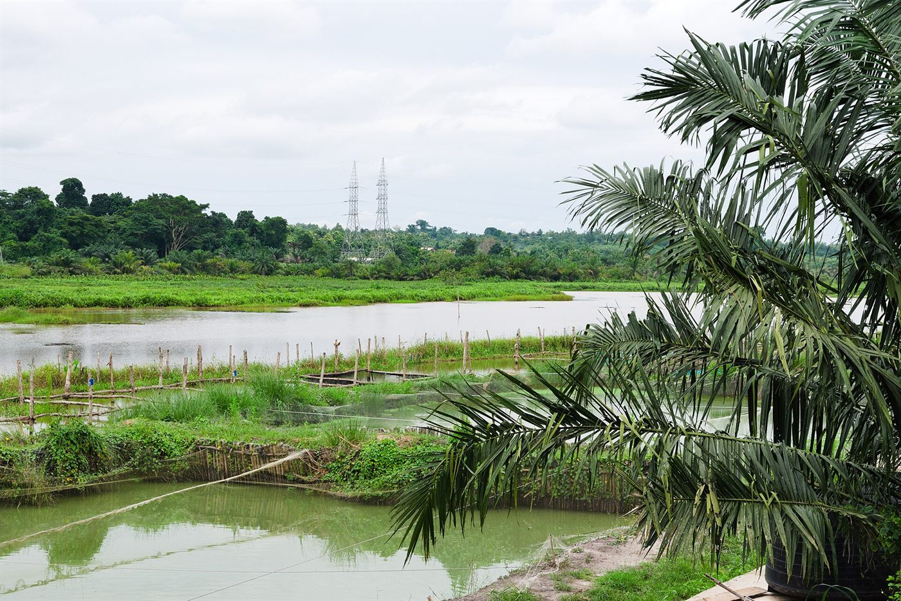

Représenter
Porter la voix des pisciculteurs et défendre les intérêts de la filière auprès de l'État et des institutions.
Interprofession du Poisson d'Élevage du Bénin
L'IPEB fédère les pisciculteurs, producteurs d'alevins, fabricants d'aliments, transformateurs et distributeurs pour bâtir une filière durable, compétitive et souveraine.

01 L'interprofession
L'Interprofession du Poisson d'Élevage du Bénin (IPEB) réunit les femmes et les hommes qui font vivre la pisciculture béninoise. Elle porte une conviction : aucune filière ne se développe durablement sans dialogue entre ses maillons.
De l'écloserie à l'étal, l'IPEB organise la concertation entre les professionnels, l'État et les partenaires techniques et financiers, et crée les conditions d'une croissance durable.
Une filière organisée, financée et tournée vers le consommateur béninois.
02 Le mot du président
Le mécanisme de financement permet de partager le risque de crédit entre tous les maillons de la chaîne de valeur.
À la tête de l'IPEB, il porte une conviction simple : la force de la filière viendra de sa capacité à parler d'une seule voix, à mutualiser ses moyens et à construire des alliances durables entre les acteurs.
Rejoindre la dynamique03 Missions
Six engagements pour structurer, défendre et faire grandir la pisciculture béninoise, du producteur au consommateur.
Porter la voix des pisciculteurs et défendre les intérêts de la filière auprès de l'État et des institutions.
Organiser les maillons de la chaîne de valeur et renforcer la coopération entre producteurs, transformateurs et distributeurs.
Veiller à la stabilité du marché, notamment sur les prix du poisson d'élevage et la qualité des intrants.
Faciliter l'accès au crédit grâce à un mécanisme inclusif et solidaire de partage du risque.
Renforcer les capacités techniques et entrepreneuriales des acteurs, des jeunes et des femmes de la filière.
Faire du poisson d'élevage une priorité nationale : sécurité alimentaire, emploi et souveraineté protéique.
Notre conviction
Une filière qui nourrit, qui emploie et qui exporte. Une filière qui se structure, se finance et se transforme localement. C'est cette ambition que l'IPEB porte chaque jour.
Explorer la filière04 La filière
Chaque étape compte. L'IPEB agit sur l'ensemble de la chaîne de valeur pour garantir qualité, revenus et débouchés.

05 Chiffres clés
Des repères pour comprendre les dynamiques, les besoins et le potentiel de la pisciculture béninoise.
Sources : Swisscontact, Gouvernement du Bénin, Banque africaine de développement (PROMAC).
06 Financement
Le manque de garanties et la méconnaissance du métier piscicole freinent encore l'accès au financement. L'IPEB porte un mécanisme solidaire qui répartit le risque de crédit sur l'ensemble de la chaîne de valeur, pour que chaque acteur puisse investir et grandir.
Le risque est réparti entre les maillons plutôt que supporté par un seul acteur.
Un dialogue structuré avec les services financiers pour mieux faire connaître la filière.
Équipements, infrastructures et intrants pour lever les freins à la production.

07 JoNaPEB
Un rendez-vous annuel pour célébrer les acteurs, partager les innovations et faire dialoguer professionnels, État et partenaires.

Inscriptions ouvertesÉdition 2026 · Ouidah, Bénin
Le rendez-vous national des pisciculteurs, transformateurs, distributeurs, institutions et partenaires. Rencontres, innovations et solutions concrètes pour une filière plus forte.
Inscription gratuite · Pass nominatif avec QR code à présenter à l'entrée.
Du 30 novembre au 2 décembre à Ouidah, puis du 7 au 9 décembre à Dassa, pour toucher le centre-sud du Bénin et réunir pisciculteurs, entreprises et organisations.

À la Maison des Jeunes de Covè, l'édition 2024 a accompagné la remise d'équipements aux coopératives et entreprises de pisciculture, avec l'appui de l'État et de l'AFD.

Tables rondes sur la diversification des espèces, les mécanismes de financement, la valorisation des infrastructures et le partage d'expériences entre les pôles aquacoles.
08 Sur le terrain
Fermes, marchés, ateliers, innovations : la filière se vit au quotidien, portée par des femmes et des hommes qui la font grandir.




09 Partenaires
Institutions, bailleurs et organisations professionnelles : des alliances au service du développement de l'aquaculture béninoise.
Partenaires institutionnels, techniques et financiers cités dans les publications officielles.
10 Actualités
Les faits marquants, les investissements et les initiatives qui façonnent l'aquaculture béninoise.
De 773 tonnes en 2023 à environ 595,5 tonnes en 2024, la filière subit la pénurie et le coût élevé des aliments, ainsi que les difficultés de marché pour le Clarias.
Financé par la BAD et l'État béninois, le projet vise 65 millions d'alevins par an, 30 000 tonnes d'aliments et le développement d'infrastructures aquacoles.
Un système motorisé de transport de poissons vivants et une unité de production d'aliments locaux ont été remis aux coopératives et entreprises de pisciculture.
11 Adhésion
Producteur, écloserie, fabricant d'aliments, transformateur, distributeur ou partenaire : prenez part à la construction d'une filière aquacole béninoise forte et durable.